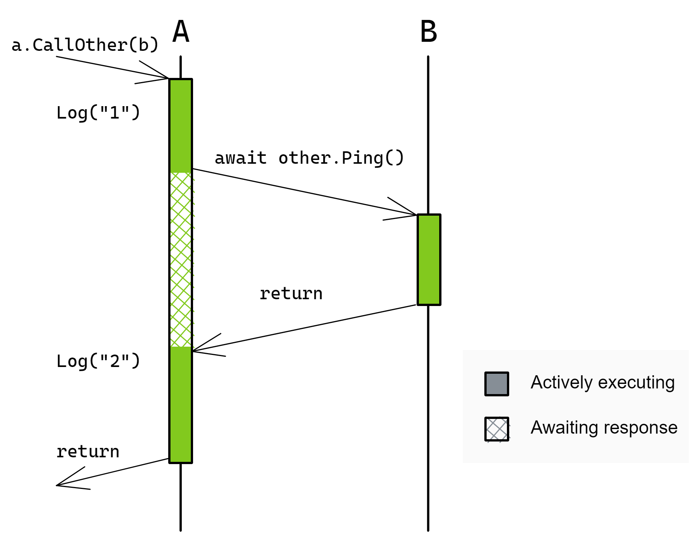
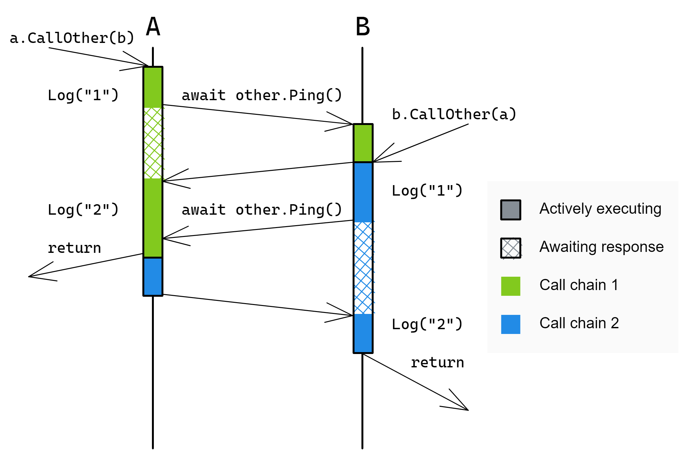
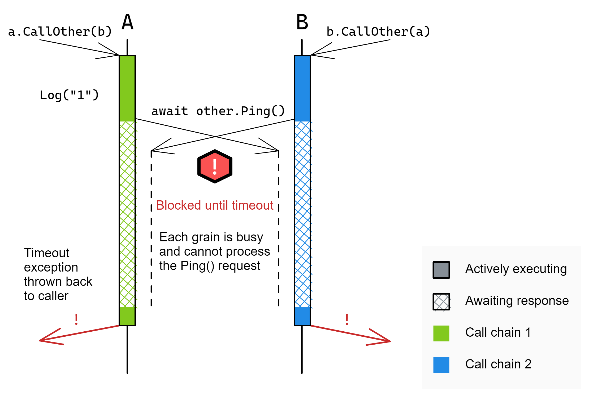
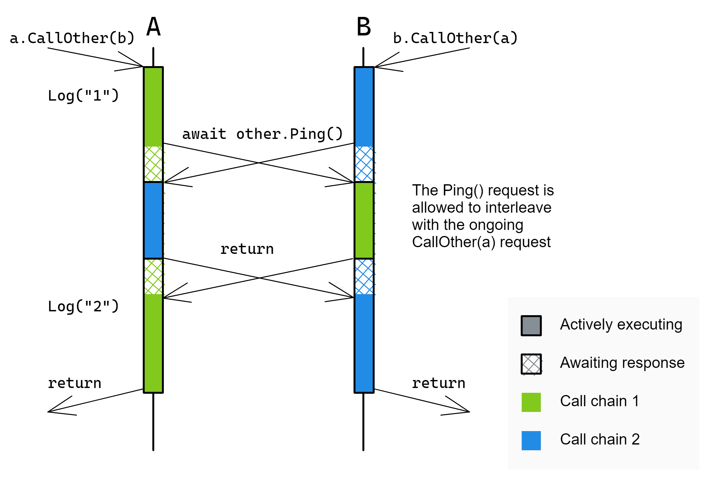

Request scheduling
Grain activations have a single-threaded execution model and, by default, process each request from beginning to completion before the next request can begin processing. In some circumstances, it may be desirable for an activation to process other requests while one request is waiting for an asynchronous operation to complete. For this and other reasons, Orleans gives the developer some control over the request interleaving behavior, as described below in the Reentrancy section. What follows is an example of non-reentrant request scheduling, which is the default behavior in Orleans.
Our initial examples with focus on the following PingGrain definition:
public interface IPingGrain : IGrainWithStringKey
{
Task Ping();
Task CallOther(IPingGrain other);
}
public class PingGrain : Grain, IPingGrain
{
private readonly ILogger<PingGrain> _logger;
public PingGrain(ILogger<PingGrain> logger) => _logger = logger;
public Task Ping() => Task.CompletedTask;
public async Task CallOther(IPingGrain other)
{
_logger.LogInformation("1");
await other.Ping();
_logger.LogInformation("2");
}
}
Two grains of type PingGrain are involved in our example, A and B.
A caller invokes the following call:
var a = grainFactory.GetGrain("A");
var b = grainFactory.GetGrain("B");
await a.CallOther(b);

The flow of execution is as follows:
- The call arrives at A, which logs
"1"and then issues a call to B - B returns immediately from
Ping()back to A - A logs
"2"an returns back to the original caller
While A is awaiting the call to B, it cannot process any incoming requests. Because of this, if A and B were to call each other simultaneously, they may deadlock while waiting for those calls to complete. Here is an example, based on the client issuing the following call:
var a = grainFactory.GetGrain("A");
var b = grainFactory.GetGrain("B");
// A calls B at the same time as B calls A.
// This might deadlock, depending on the non-deterministic timing of events.
await Task.WhenAll(a.CallOther(b), b.CallOther(a));
Case 1: the calls do not deadlock

In this example:
- The
Ping()call from A arrives at B before theCallOther(a)call arrives at B. - Therefore, B processes the
Ping()call before theCallOther(a)call. - Because B processes the
Ping()call, A is able to return back to the caller. - When B issues its
Ping()call to A, A is still busy logging its message ("2"), so the call has to wait a short duration, but it is soon able to be processed. - A processes the
Ping()call and returns to B which returns to the original caller.
Now, we will examine a less fortunate series of events: one in which the same code results in a deadlock due to slightly different timing.
Case 2: the calls deadlock

In this example:
- The
CallOthercalls arrive at their respective grains and are processed simultaneously. - Both grains log
"1"and proceed toawait other.Ping(). - Since both grains are still busy (processing the
CallOtherrequest, which has not finished yet), thePing()requests wait - After some period of time, Orleans determines that the call has timed out and each
Ping()call results in an exception being thrown. - This exception is not handled by the
CallOthermethod body and so it bubbles up to the original caller.
The following section describes how to prevent deadlocks by allowing multiple requests to interleave their execution with each other.
Reentrancy
Orleans defaults to choosing a safe execution flow: one in which the internal state of a grain is not modified concurrently by multiple requests. Concurrent modification of internal state complicates logic and puts a greater burden on the developer. This protection against those kinds of concurrency bugs has a cost which we saw above, primarily liveness: certain call patterns can lead to deadlocks. One way to avoid deadlocks is to ensure that grain calls never form a cycle. Often times, it is difficult to write code which is cycle-free and cannot deadlock. Waiting for each request to run from beginning to completion before processing the next request can also hurt performance. For example, by default, if a grain method performs some asynchronous request to a database service then the grain will pause request execution until the response from the database arrives at the grain.
Each of those cases are discussed in the sections which follow. For these reasons, Orleans provides developers with options to allow some or all requests to be executed concurrently, interleaving their execution with each other. In Orleans, this is called reentrancy or interleaving. By executing requests concurrently, grains which perform asynchronous operations can process more requests in a shorter period of time.
Multiple requests may be interleaved in the following cases:
- The grain class is marked as
[Reentrant] - The interface method is marked as
[AlwaysInterleave] - The grain's
[MayInterleave(x)]predicate returnstrue
With reentrancy, the following case becomes a valid execution and the possibility of the above deadlock is removed.
Case 3: the grain or method is reentrant

In this example, grains A and B are able to call each other simultaneously without any potential for request scheduling deadlocks because both grains are reentrant. The following sections provide more details on reentrancy.
Reentrant grains
Grain implementation classes may be marked with the [Reentrant] attribute to indicate that different requests may be freely interleaved.
In other words, a reentrant activation may start executing another request while a previous request has not finished processing. Execution is still limited to a single thread, so the activation is still executing one turn at a time, and each turn is executing on behalf of only one of the activation’s requests.
Reentrant grain code will never run multiple pieces of grain code in parallel (execution of grain code will always be single-threaded), but reentrant grains may see the execution of code for different requests interleaving. That is, the continuation turns from different requests may interleave.
For example, with the pseudo-code below, when Foo and Bar are 2 methods of the same grain class:
Task Foo()
{
await task1; // line 1
return Do2(); // line 2
}
Task Bar()
{
await task2; // line 3
return Do2(); // line 4
}
If this grain is marked [Reentrant], the execution of Foo and Bar may interleave.
For example, the following order of execution is possible:
Line 1, line 3, line 2 and line 4. That is, the turns from different requests interleave.
If the grain was not reentrant, the only possible executions would be: line 1, line 2, line 3, line 4 OR: line 3, line 4, line 1, line 2 (a new request cannot start before the previous one finished).
The main tradeoff in choosing between reentrant and non-reentrant grains is the code complexity to make interleaving work correctly, and the difficulty to reason about it.
In a trivial case when the grains are stateless and the logic is simple, fewer (but not too few, so that all the hardware threads are used) reentrant grains should, in general, be slightly more efficient.
If the code is more complex, then a larger number of non-reentrant grains, even if slightly less efficient overall, should save you a lot of grief of figuring out non-obvious interleaving issues.
In the end, the answer will depend on the specifics of the application.
Interleaving methods
Grain interface methods marked with [AlwaysInterleave] will be interleaved regardless of whether the grain is reentrant or not. Consider the following example:
public interface ISlowpokeGrain : IGrainWithIntegerKey
{
Task GoSlow();
[AlwaysInterleave]
Task GoFast();
}
public class SlowpokeGrain : Grain, ISlowpokeGrain
{
public async Task GoSlow()
{
await Task.Delay(TimeSpan.FromSeconds(10));
}
public async Task GoFast()
{
await Task.Delay(TimeSpan.FromSeconds(10));
}
}
Now consider the call flow initiated by the following client request:
var slowpoke = client.GetGrain<ISlowpokeGrain>(0);
// A) This will take around 20 seconds
await Task.WhenAll(slowpoke.GoSlow(), slowpoke.GoSlow());
// B) This will take around 10 seconds.
await Task.WhenAll(slowpoke.GoFast(), slowpoke.GoFast(), slowpoke.GoFast());
Calls to GoSlow will not be interleaved, so the execution of the two GoSlow() calls will take around 20 seconds.
On the other hand, because GoFast is marked [AlwaysInterleave], the three calls to it will be executed concurrently and will complete in approximately 10 seconds total instead of requiring at least 30 seconds to complete.
Reentrancy using a predicate
Grain classes can specify a predicate to determine interleaving on a call-by-call basis by inspecting the request.
The [MayInterleave(string methodName)] attribute provides this functionality.
The argument to the attribute is the name of a static method within the grain class which accepts an InvokeMethodRequest object and returns a bool indicating whether or not the request should be interleaved.
Here is an example which allows interleaving if the request argument type has the [Interleave] attribute:
[AttributeUsage(AttributeTargets.Class | AttributeTargets.Struct)]
public sealed class InterleaveAttribute : Attribute { }
// Specify the may-interleave predicate.
[MayInterleave(nameof(ArgHasInterleaveAttribute))]
public class MyGrain : Grain, IMyGrain
{
public static bool ArgHasInterleaveAttribute(InvokeMethodRequest req)
{
// Returning true indicates that this call should be interleaved with other calls.
// Returning false indicates the opposite.
return req.Arguments.Length == 1
&& req.Arguments[0]?.GetType().GetCustomAttribute<InterleaveAttribute>() != null;
}
public Task Process(object payload)
{
// Process the object.
}
}